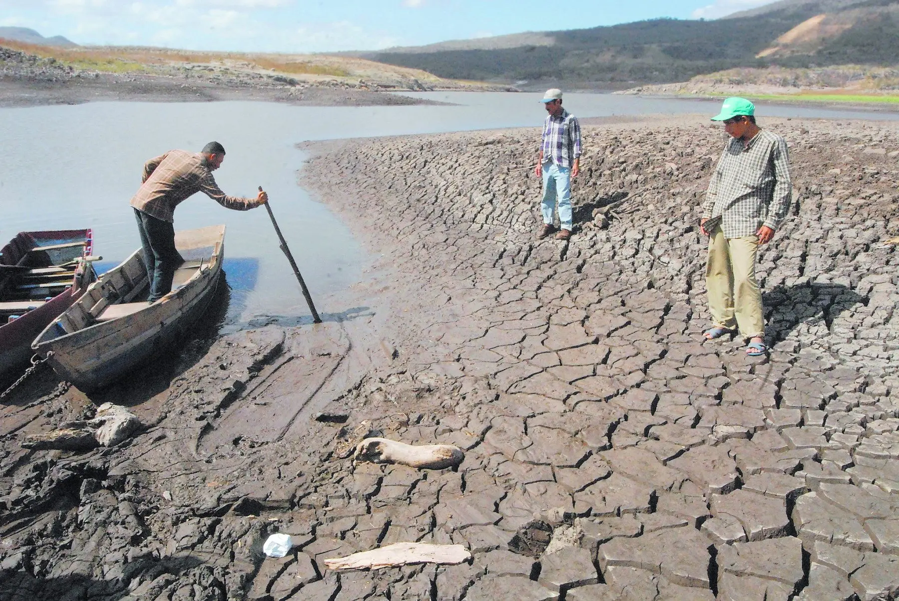
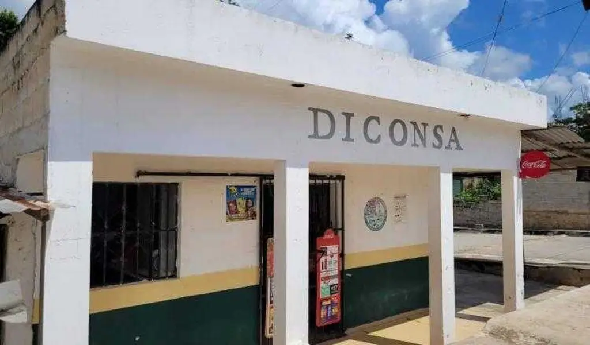
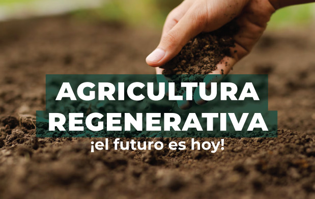

Seguridad Alimentaria en México
Suelo Sano, Futuro Sostenible
El Problema

64% de los suelos mexicanos están degradados
- Erosión: Pérdida de 4.6 toneladas de suelo por hectárea/año
- Dependencia alimentaria: 45% de alimentos importados
- Hambre: 22.5% de la población en pobreza alimentaria
SEGALMEX 2025

Logros:
- Red de 27,000 tiendas Diconsa
- Despensas para 5 millones de familias
Limitación: No regenera suelos, solo mitiga el hambre a corto plazo.
Propuesta: "Suelos Vivos"

Ambiental
Regenerar 1M de hectáreas
Económico
Créditos a campesinos
Social
500k huertos urbanos
#SuelosVivosMéxicoSano | Fuentes: SEMARNAT, CONEVAL, SEGALMEX | Mathias Reyes